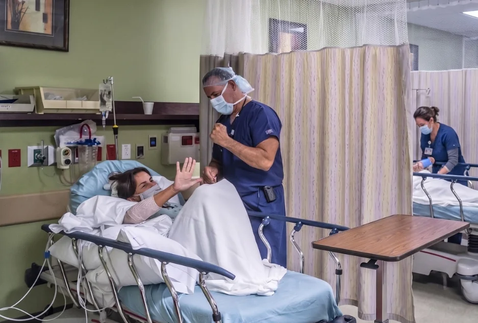

HomeInternational patientsPacientes internacionales
Fly in for the operation. Not for the first opinion.
Viaje para la cirugía. No para la primera opinión.
Patients have traveled to Doral from 30 countries for hand, wrist, elbow and shoulder care. Many of them started at home: a video visit with Dr. Badia, a plan, and then a trip arranged around it by a bilingual team.
Pacientes de 30 países han viajado a Doral para tratar la mano, la muñeca, el codo y el hombro. Muchos comenzaron desde su casa: una consulta virtual con el Dr. Badia, un plan, y luego un viaje organizado por un equipo bilingüe.

Patients from 30 countriesPacientes de 30 países
Your journeySu recorrido
Five steps. The first four happen at home.
Cinco pasos. Los primeros cuatro, desde su casa.
$250video visit with Dr. Badiaconsulta virtual con el Dr. Badia
Additional services and prescriptions are discussed during the consultation.Servicios adicionales y recetas se conversan durante la consulta.
1
Request a video visit
Solicite una consulta virtual
Fill in the short form with your country and the problem.
Complete el formulario con su país y su problema.
2
The international team contacts you
Le contacta el equipo internacional
In English or Spanish, to guide you through every next step.
En español o en inglés, para guiarle en cada paso.
3
Send your records
Envíe sus estudios
X-rays, MRI, operative reports and anything else from your doctors, for Dr. Badia to review.
Radiografías, resonancia, informes quirúrgicos y cualquier otro estudio, para que el Dr. Badia los revise.
4
Confirm and pay
Confirme y pague
You receive an email confirming your consultation.
Recibirá un correo confirmando su consulta.
5
Meet Dr. Badia on video
Reúnase con el Dr. Badia por video
He reviews your condition, answers your questions and recommends the best treatment. If surgery is the answer, the team plans your trip.
Él revisa su caso, responde sus preguntas y recomienda el mejor tratamiento. Si la respuesta es cirugía, el equipo organiza su viaje.
The coordination teamEl equipo de coordinación
One team between you, Dr. Badia and your doctors at home.
Un equipo entre usted, el Dr. Badia y sus médicos en casa.
Working with Dr. Badia and Jessie Raya, PA-C, the team keeps your surgeon and your therapist back home in the loop, before and after your procedure.
Junto al Dr. Badia y Jessie Raya, PA-C, el equipo mantiene informados a su médico y a su terapeuta en su país, antes y después del procedimiento.
Records and scheduling
Estudios y agenda
Appointments, imaging and surgery dates planned around your flights.
Citas, imágenes y fecha de cirugía planificadas según sus vuelos.
Your therapist, included
Su terapeuta, incluido
Dr. Badia can join a video call with your physical or occupational therapist at home.
El Dr. Badia puede unirse a una videollamada con su terapeuta en su país.
Follow-up by video
Controles por video
No need to fly back for every check. Follow-ups continue from home.
No necesita volver para cada control. El seguimiento continúa desde su casa.
Where to stayDónde hospedarse
A partner hotel across the street.
Un hotel aliado frente a la clínica.
Preferred rates at five hotels near the center, minutes from Miami International Airport. Ask the international team for the partner rate.
Tarifas preferenciales en cinco hoteles cerca del centro, a minutos del Aeropuerto Internacional de Miami. Pida la tarifa al equipo internacional.
- Hyatt Place Miami Airport West
3655 NW 82nd Ave, Across the streetFrente a la clínica. 305-718-8292 ext. 5104 - AC Hotel by Marriott Miami Airport West/Doral
8091 NW 36th St, Around the cornerA la vuelta. 786-753-6035 - InterContinental West Miami
2505 NW 87th Ave, NearbyCerca. 305-468-1400 - Provident Doral at The Blue
5300 NW 87th Ave, NearbyCerca. 305-640-6600 - Trump National Doral Miami
4400 NW 87th Ave, NearbyCerca. 305-592-2000
Where patients come fromDe dónde vienen
30 countries, one building in Doral.
30 países, un solo edificio en Doral.
Patient stories from each of these countries are on drbadia.com.
En drbadia.com hay testimonios de pacientes de cada uno de estos países.
ArgentinaThe BahamasBarbadosBoliviaBrazilCanadaCayman IslandsChileColombiaCuraçaoDominican RepublicEcuadorEl SalvadorFranceGhanaGuatemalaHaitiHondurasIndiaJamaicaMexicoPanamaParaguayPeruSpainSurinameTrinidad and TobagoUnited KingdomVenezuelaVirgin Islands
They traveledEllos viajaron
Stories from patients who flew in.
Historias de pacientes que viajaron.
Six hand surgeries in one daySeis cirugías de mano en un solo día
A pilot, eight years after his wrist fusionUn piloto, ocho años después de su artrodesis
An OB-GYN back to work after carpal tunnel releaseUna ginecóloga de vuelta al trabajo
Shoulder surgery, from the Cayman IslandsCirugía de hombro, desde Islas Caimán
Video follow-up after a massive rotator cuff repairControl por video tras reparación del manguito rotador
Start from home.
Empiece desde su casa.
Book a video visit, send your images, and talk to Dr. Badia before you book a flight.
Reserve una consulta virtual, envíe sus estudios y hable con el Dr. Badia antes de comprar el vuelo.